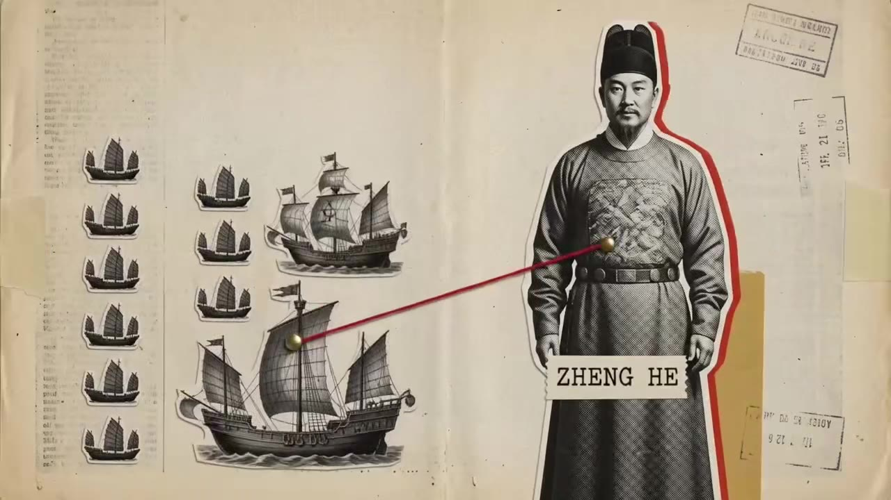
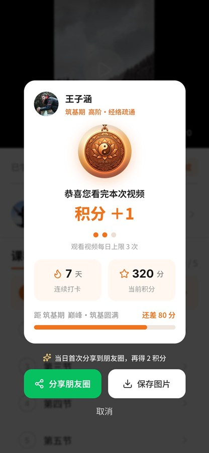
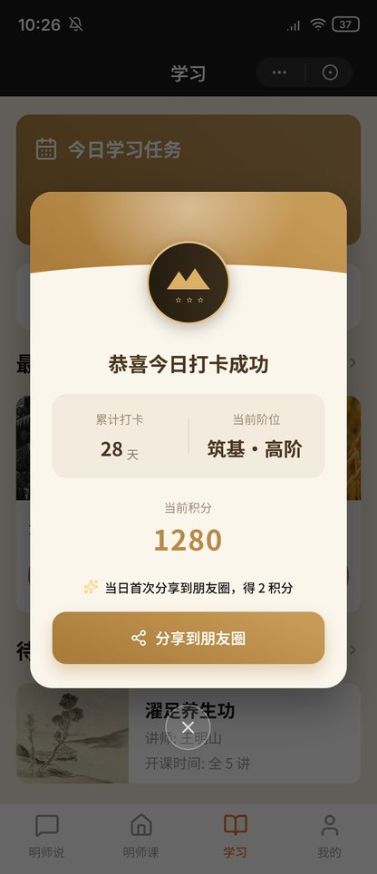
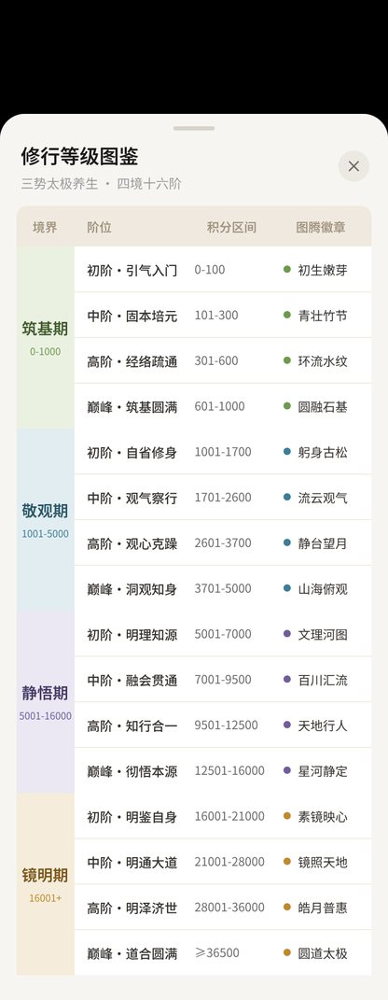
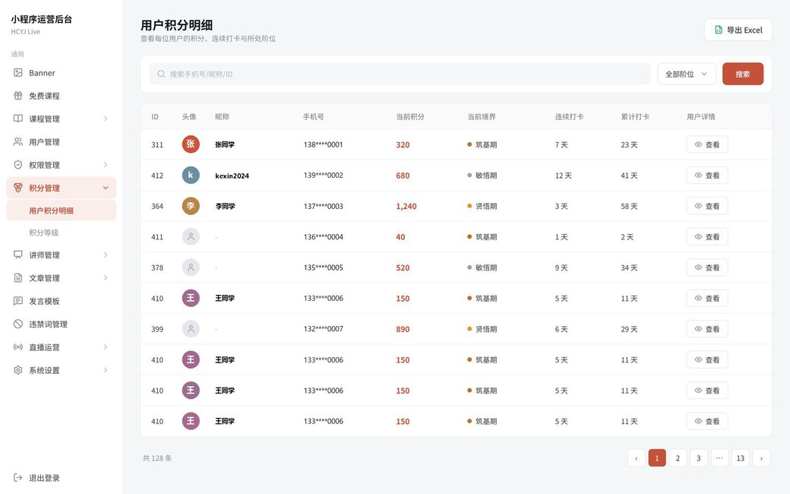
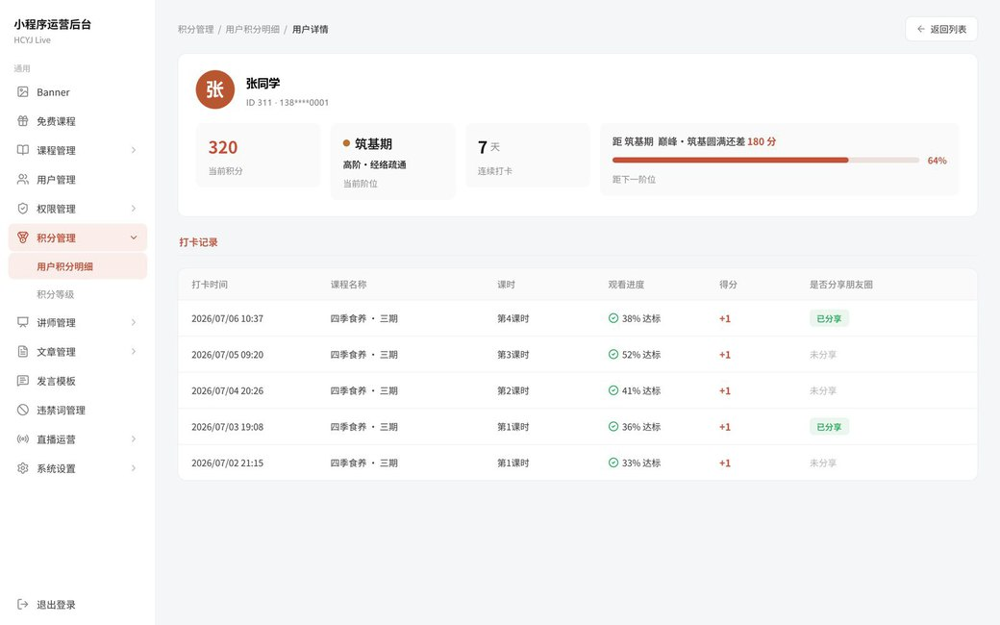
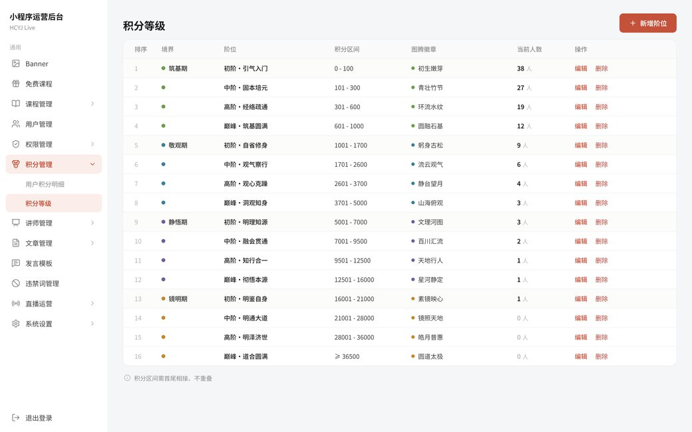

MASTER
硕士
西南民族大学
网络信息与安全
Drawing...
0%
Product Manager / AI Workflow Designer / Data-Driven Design
关于我
Nice to meet you!
你好！我是王子涵
梳理复杂的业务逻辑和用户使用场景，把模糊的想法转化成清晰、可落地的产品方案。需求分析、产品规划、数据分析、原型设计、研发协同，也会用 HTML 交互页面把产品逻辑直接演示出来。
我尤其关注 AI 在真实工作场景中的应用 —— 拆解内容生产和业务操作的流程，把它设计成标准化、可复用的工作流。比起单纯使用 AI 工具，我更在意先看懂业务里真正的问题：把一个模糊的问题拆开、想清楚、再拼回去。
核心能力
从需求调研到上线落地的完整链路 —— 独立跟完用户行为标签系统和教师团队小程序两个项目。
用数据找到问题出在哪，用设计把它解决掉，再用数据验证有没有真的解决。
把原本要靠人反复重复的流程拆开，沉淀成 AI 能自己跑完的可复用工作流。
从信息架构到高保真界面，再到 AI 生成的动态视觉，一个人能走通全流程。
作品集
使用 Claude Code 与 Google Flow 独立完成 · 内容策划 / 画面生成 / 动态剪辑
播放视频热点发现 · 情感分析 · 主题归纳 —— 用 LangGraph 把问答链路拆成四个可控节点
查看系统梳理现有后台业务逻辑 · 需求调研 · 功能规划与原型设计
查看原型公众号图文与数字人视频两条链路，拆解后固化成可复用的工作流
查看链路六大维度标签体系 · 自动匹配规则 · 全程跟进开发测试与上线
查看流程点击卡片查看该作品详情
一支讲郑和下西洋的解释性短片 · 用 Claude Code + Google Flow 独立完成，从选题、脚本、分镜到画面生成与成片

围绕一个选题，把 B 站相关视频的评论和弹幕抓下来，建成能直接提问的知识库 —— 观众在讨论什么、想看什么、槽点集中在哪，不用再自己翻评论区
关键词搜到相关视频，把视频信息、评论、弹幕一并抓下来清洗入库。一个选题对应一批视频，构成一个独立数据集。
每个数据集单独切分、做 embedding，存成各自的 FAISS 索引。提问时只在选中的数据集内召回，不同选题的语料互不干扰。
judge 只判相关性和改写问题，chat 只负责生成。文档带标题和链接进 prompt，结论能回溯到具体哪条评论。
先扩写短问题，再从 FAISS 召回 top-15
judge 模型并发判断相关性，只留 yes
带标题与链接进 prompt，SSE 流式
补全代词与序号指代，重来一轮
为提升学员的持续学习动力，设计打卡积分与阶位成长体系，覆盖学员端三个核心页面与后台的积分查询、等级配置
进度达标即可打卡 +1 分，分享再加。做完一讲，当场有回应。
四境各四阶，对应积分区间与图腾徽章。各门课的学习量，换成同一条路径上的坐标。
连续天数断一天归零，中断有了代价；分享加分，顺带触达未购课的人。
完成一讲后的积分反馈、分享加分与阶位查看，三个核心页面各承担一环



学员在小程序里的主路径是：完成一讲 → 立刻看到积分与阶位的变化 → 分享再加分 → 需要时打开图鉴确认自己的位置。这三个页面覆盖其中的反馈、分享和查阅环节。
后台包含积分明细、用户档案与等级配置三个页面，支持按用户、时间与积分类型查询，结果可导出。运营通过这三个页面核对积分来源、处理异常并维护阶位规则。



公众号图文与数字人口播视频两类内容，各有一套由 AI 执行、可复用且能自进化的工作流
从选题调研到成稿发布的公众号图文生产线，给定选题方向即可产出带插图、已套版、可直接粘贴发布的图文初稿。
解决的问题写作法则与违禁词库固化在规则文档，不同作者按同一标准产出
工作流批量产出符合规范的初稿，人工在初稿上修改而非从零撰写
风格与合规要求固化为文档，新人接手可直接按同一标准产出
追问到底：写给哪个号、给谁看、要达到什么。再抓竞品语料、拆解爆款方法论
确认选题六要素，搭出大标题、小标题、论点和配图位；选题不成立就不进写作
对照写作法则和违禁词库写正文，再按选定版式套版成可粘贴的 HTML
按配图位逐张生成插图，正文过去 AI 味处理，评分不达标不放行
两阶段内容审查，发布前脚本终检字数、敏感词、配图齐不齐，全过才发
从选题调研到成片分发的数字人口播视频生产线，选定老师后自动完成爆款调研、口播稿撰写与声音形象合成，产出可直接分发到三平台的成品视频。
解决的问题三位老师各自一套源资料与人设配置，读哪套写哪套，从目录上隔离
多平台初筛由工作流完成，人工只确认候选，选题取自已验证的爆款
基于确认的选题方向生成口播稿初稿，人工修改即可，撰写时间大幅缩短
确认目标老师、读该老师源资料、定视频规格；没读源资料不许往下走
三平台搜同属性内容 → 人工确认候选 → 合规下载 → 只提炼选题方向，不抄原文
对照老师源资料、写作前置规则和道家知识库写稿，去味后人工审核
MiniMax 合成语音 → HeyGen 生成口播素材 → 字幕包装剪辑成片
视频号、抖音、快手三平台，发布前终检，用户确认后才执行
以下结构为上述两个 skill 共用，各自维护一套独立配置。
五层结构以自然语言提出的修改意见，无需单独编辑规则文档
UserPromptSubmit 钩子在每次提交时检测输入，识别其为修正意见而非新任务
即时写入信号队列，不中断当前任务，无需人工事后记录
SessionStart 钩子检查队列，存在待处理信号时启动 evolution-runner 子 Agent
子 Agent 将信号归纳为具体的规则修改建议，由人工逐条批准或否决
已批准的修改写入 AGENTS.md 或对应 SKILL.md，下次会话生效
把分散在聊天记录、订单、课程进度里的用户行为，转成一套结构化的标签体系。
运营手上有大量用户，却只看得到零散的行为记录 —— 谁在群里说过什么、买过什么、学到第几课。需要一套统一的语言，把行为翻译成可查询、可筛选、可复用的标签。
社群聊天、订单、课程进度、直播互动汇总到一处
明确什么话、什么动作算一次有效信号
信号落进六大维度，确定层级与互斥关系
自动打标后做去重、冲突检查与人工抽检
分层触达、内容推荐、复购召回直接调用
标签分属健康痛点 / 消费意向 / 情感需求 / 养生方法 / 国学文化 / 人群画像6 个维度，共 32 个，颜色对应维度。
打个招呼
正在寻找 2026 届产品岗位。如果你觉得我们可以聊聊，随时来找我。